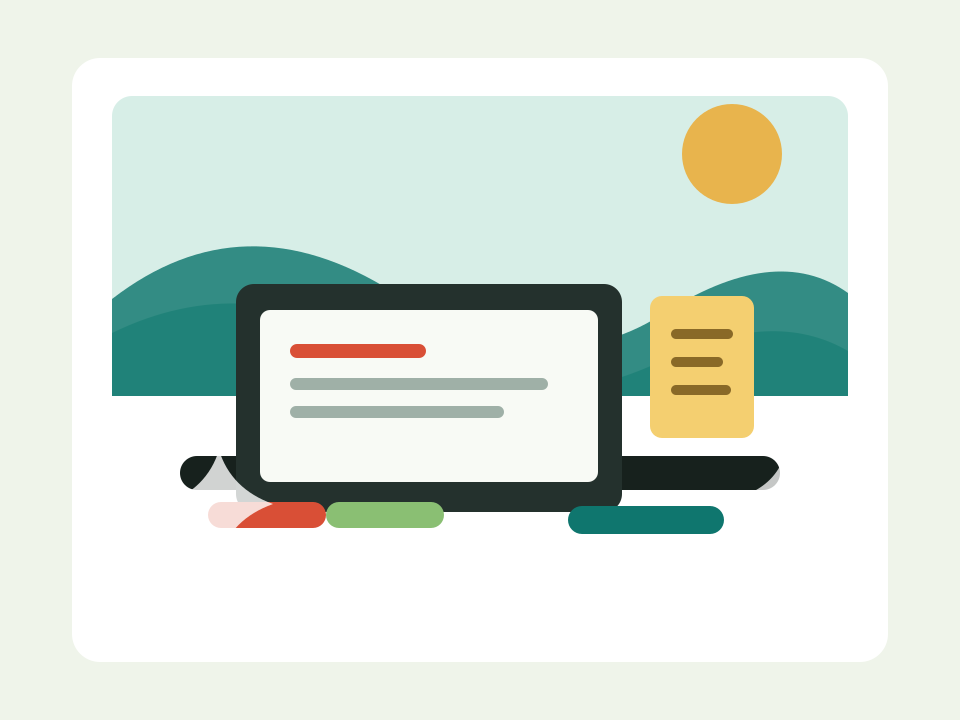

给个人网站加一点长期主义
从信息架构、写作节奏和可维护样式三个角度，整理一个能陪你写很多年的博客首页。
#前端#个人品牌#CSS
中文个人博客模板
这里适合记录技术实践、读书笔记、城市漫游和长期项目。结构已经搭好，你只需要替换内容，就能拥有一个干净、耐读、适合发布到 GitHub Pages 的博客。

Latest Posts
从信息架构、写作节奏和可维护样式三个角度，整理一个能陪你写很多年的博客首页。
有些想法并不是坐在桌前挤出来的，而是在路灯亮起之前，慢慢走出来的。
把一本书变成自己的思考材料，需要问题、连接和复述，而不只是高亮句子。
没有找到匹配的文章。